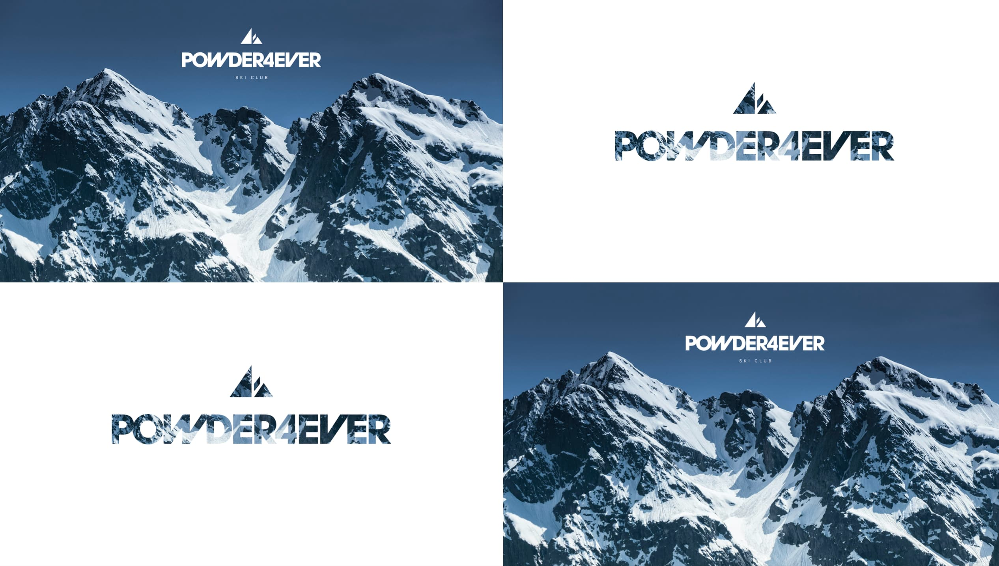
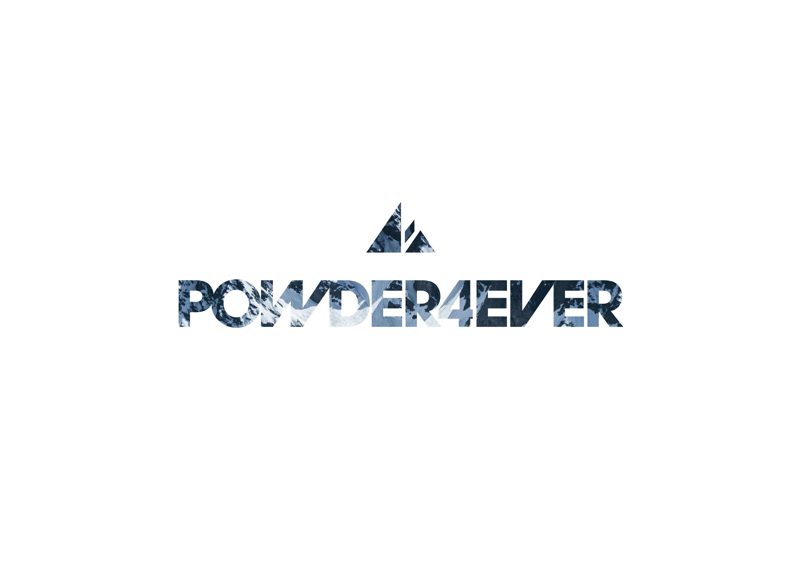
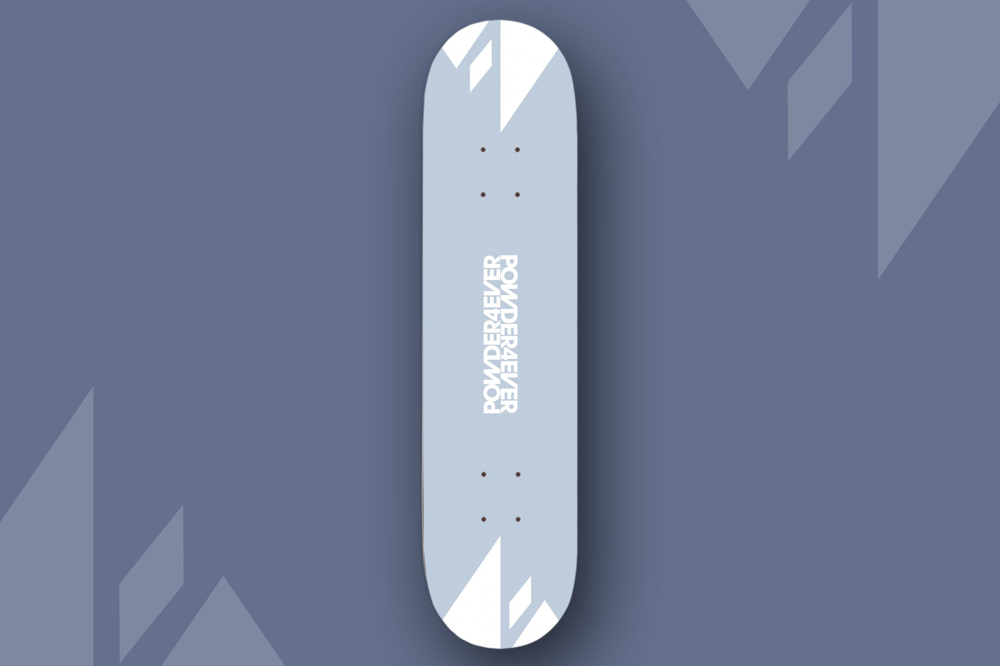

Powder4Ever Ski Club
Branding completo para defender la tipografía Avant Garde Gothic
2024–2025
Tipografía aplicada
Proyecto de asignatura
Illustrator, Photoshop
La tarea consistía en defender la tipografía Avant Garde Gothic, diseñada por Herb Lubalin en 1970, aplicándola a un proyecto real. La solución fue crear desde cero el branding completo de un club de esquí. La Avant Garde Gothic, con su geometría precisa y sus ligaduras características, encajaba perfectamente con la estética de un club de montaña contemporáneo. La paleta de azules, oscuro, medio y claro, refuerza la identidad invernal del proyecto. El sistema de identidad se aplicó a billboard, stickers metálicos, tabla de snow y marquesina urbana, demostrando la versatilidad de la tipografía en distintos soportes y escalas.


